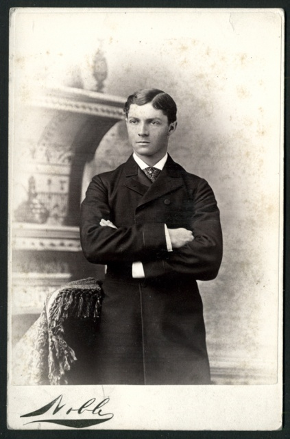

It all started...
...in 1918 by a young business man named Howard Chewy who had had enough of his wingtip shoes getting stuck to the pavement outside of his school in Salt Lake City, Utah. "Gum should be a treat, not a hassle!" And with that he would volunteer his weekends, trusty ruler in hand, to clearing off every desk, sidewalk, bench, and trash can in his neighborhood.
From there his enterprise continued where he began to recruit his neighborhood friends and paying them a nickle for a pound that they were able to scrape up.
Where we are now
Now with a team stretching over 4 states and thousands of customers serviced, GumGone is the leading gum removal service in the nation and continues to grow to this day.